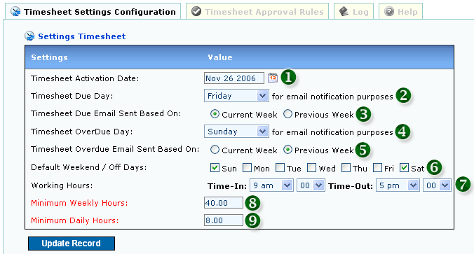
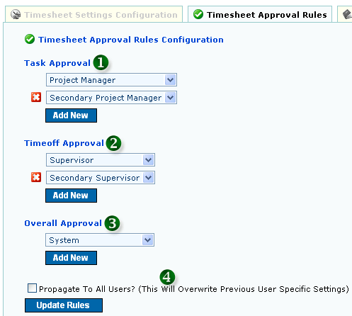

<table class="no-border" cellpadding=3 cellspacing=3>
<tr><td>
	<H1>1. Timesheet Configuration</H1>
	<pre align="left">     
	<strong>Figure 1: Timesheet Configuration</strong></pre>
	<ol>
		<li><strong>1. TIMESHEET ACTIVATION DATE:</strong> System Based Timesheet Activation Date</li>
		<li><strong>2. TIMESHEET DUE DAY:</strong> Due Day for Reminder Email to be Sent. Refer <a href="email_admin.php">Email Admin</a> for Further Configuration</li>
		<li><strong>3. DUE EMAIL SENT BASED ON DATA ON CURRENT OR PREVIOUS WEEK</strong></li>
		<li><strong>4. TIMESHEET OVERDUE DAY:</strong> OverDue Day for Reminder Email to be Sent. Refer <a href="email_admin.php">Email Admin</a> for Further Configuration</li>
		<li><strong>5. OVERDUE EMAIL SENT BASED ON DATA ON CURRENT OR PREVIOUS WEEK</strong></li>
		<li><strong>6. SYSTEM BASED WEEKLY OFF DAYS:</strong> Users can change their own Off Days via User Preference</li>
		<li><strong>7. DEFAULT WORKING HOURS:</strong> User can change via Timesheet</li>
		<li><strong>8. DEFAULT MINIMUM WEEKLY HOURS (MANDATORY):</strong> Can be further configured per User via User Update</li>
		<li><strong>9. DEFAULT MINIMUM DAILY HOURS (MANDATORY):</strong> Can be further configured per User via User Update</li>
	</ol>
	<H1>2. Approval Rules Configuration</H1>
	<pre align="left">     
	<strong>Figure 2: Approval Rules Configuration</strong></pre>
	<ol>
		<li><strong>1. TIMESHEET TASK APPROVAL CONFIGURATION</strong></li>
		<li><strong>2. TIMEOFF TASK APPROVAL CONFIGURATION</strong></li>
		<li><strong>3. OVERALL TASK APPROVAL CONFIGURATION</strong></li>
		<li><strong>4. PROPAGATE RULES TO ALL USERS</strong></li>
	</ol>
</td></tr>
</table>